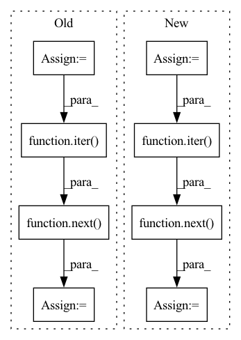

Pattern ID :1945

Before Change
// Train the Xvector model
train_set = hparams["train_loader"]()
valid_set = hparams["valid_loader"]()
xvect_brain.fit(range(hparams["number_of_epochs"]), train_set, valid_set)
print("Xvector model training completed!")
// Instantiate extractor obj
ext_brain = Extractor(
model=hparams["xvector_model"],
feats=hparams["compute_features"],
norm=hparams["mean_var_norm"],
)
// Extract xvectors from a validation sample
valid_x, valid_y = next(iter(valid_set.get_dataloader()))
print("Extracting Xvector from a sample validation batch!")
xvectors = ext_brain.extract(valid_x)
print("Extracted Xvector.Shape: ", xvectors.shape)
After Change
)
// Extract xvectors from a validation sample
extraction_loader = sb.data_io.dataloader.make_dataloader(
hparams["valid_data"], **hparams["loader_kwargs"]
)
batch = next(iter(extraction_loader))
print("Extracting Xvector from a sample validation batch!")
xvectors = ext_brain.extract(batch.wav.data, batch.wav.lengths)
print("Extracted Xvector.Shape: ", xvectors.shape)
In pattern: SUPERPATTERN
Frequency: 3
Non-data size: 8
Instances
Fragment ID: 8648227
Project Name: speechbrain/speechbrain
Commit Name: d656bc6618227a593465ff1a507ec955172eb4ac
Time: 2020-12-20
Author: aku.rouhe@aalto.fi
File Name: recipes/minimal_examples/neural_networks/Xvector/example_xvector_experiment.py
M Class Name: AnonimousClass
N Class Name: AnonimousClass
M Method Name: main(0)
N Method Name: main(0)
M Parent Class:
N Parent Class:
M File Name: recipes/minimal_examples/neural_networks/Xvector/example_xvector_experiment.py
N File Name: recipes/minimal_examples/neural_networks/Xvector/example_xvector_experiment.py
M Start Line: 91
M End Line: 106
N Start Line: 84
N End Line: 120
'>
Before Change
def test_add_augmentation_albumentations(mnist_dataset_train):
// Arrange
copy_dataset = mnist_dataset_train.copy()
augmentation = A.CenterCrop(1, 1)
// Act
copy_dataset.add_augmentation(augmentation)
// Assert
batch = next(iter(copy_dataset.get_data_loader()))
data_sample = batch[0][0]
assert_that(data_sample.numpy().shape, equal_to((1, 1, 1)))
After Change
// Arrange
augmentation = A.CenterCrop(1, 1)
// Act
copy_dataset = mnist_dataset_train.get_augmented_dataset(augmentation)
// Assert
batch = next(iter(copy_dataset.data_loader))
data_sample = batch[0][0]
assert_that(data_sample.numpy().shape, equal_to((1, 1, 1)))
'>
Fragment ID: 8648225
Project Name: deepchecks/deepchecks
Commit Name: 7cc184f31b2fa68766de920f8d1df1a3d8deaa05
Time: 2022-03-09
Author: jonatan.lib@gmail.com
File Name: tests/vision/core/vision_data_test.py
M Class Name: AnonimousClass
N Class Name: AnonimousClass
M Method Name: test_add_augmentation_albumentations(1)
N Method Name: test_add_augmentation_albumentations(1)
M Parent Class:
N Parent Class:
M File Name: tests/vision/core/vision_data_test.py
N File Name: tests/vision/core/vision_data_test.py
M Start Line: 29
M End Line: 36
N Start Line: 29
N End Line: 35
'>
Before Change
def test_add_augmentation_imgaug(mnist_dataset_train_imgaug):
// Arrange
copy_dataset = mnist_dataset_train_imgaug.copy()
augmentation = iaa.CenterCropToFixedSize(1, 1)
// Act
copy_dataset.add_augmentation(augmentation)
// Assert
batch = next(iter(copy_dataset.get_data_loader()))
data_sample = batch[0][0]
assert_that(data_sample.numpy().shape, equal_to((1, 1, 1)))
After Change
// Arrange
augmentation = iaa.CenterCropToFixedSize(1, 1)
// Act
copy_dataset = mnist_dataset_train_imgaug.get_augmented_dataset(augmentation)
// Assert
batch = next(iter(copy_dataset.data_loader))
data_sample = batch[0][0]
assert_that(data_sample.numpy().shape, equal_to((1, 1, 1)))
'>
Fragment ID: 8648229
Project Name: deepchecks/deepchecks
Commit Name: 7cc184f31b2fa68766de920f8d1df1a3d8deaa05
Time: 2022-03-09
Author: jonatan.lib@gmail.com
File Name: tests/vision/core/vision_data_test.py
M Class Name: AnonimousClass
N Class Name: AnonimousClass
M Method Name: test_add_augmentation_imgaug(1)
N Method Name: test_add_augmentation_imgaug(1)
M Parent Class:
N Parent Class:
M File Name: tests/vision/core/vision_data_test.py
N File Name: tests/vision/core/vision_data_test.py
M Start Line: 58
M End Line: 65
N Start Line: 57
N End Line: 63